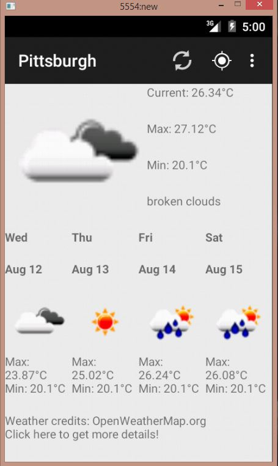
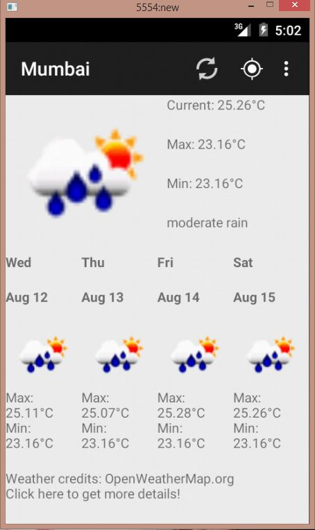
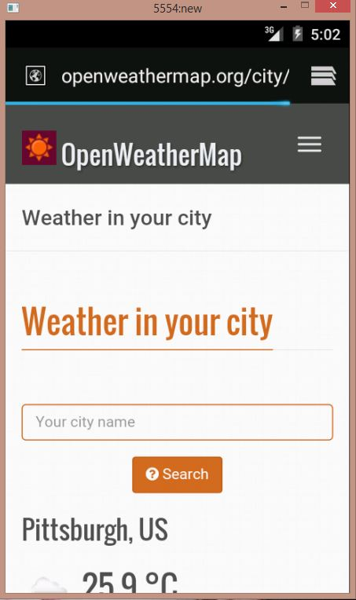

Weather
Android app that shows current and 4-day prediction of weather of a location
This project is maintained by ss37
About Weather App
This is an Android app that displays the weather forecast of a location obtained using Android Location Services. As long as there is data connectivity, the app can detect the location and display the current weather and a 4-day weather forecast.

You can click on a list of cities in the menu to display the current weather and a 4-day weather forecast for another city.


For more details, you can view about the weather in the Android browser.

I used Open Weather API for displaying the current weather and a 4-day weather forecast for any city. I receive data in JSON, which I then parse and display as an Android activity.
Technologies used
Android, Open Weather API, JSON